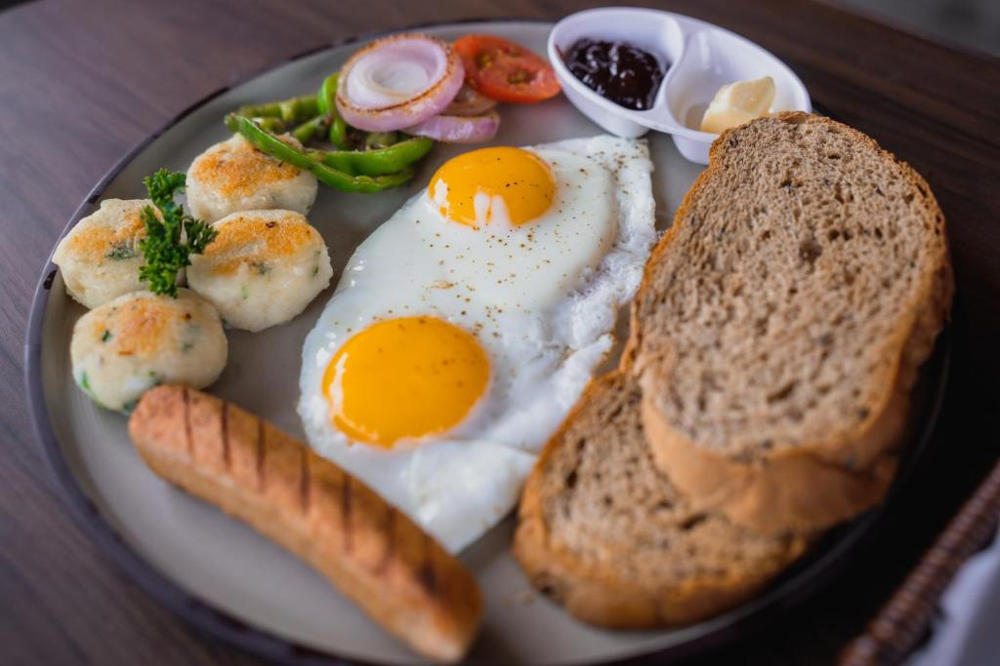
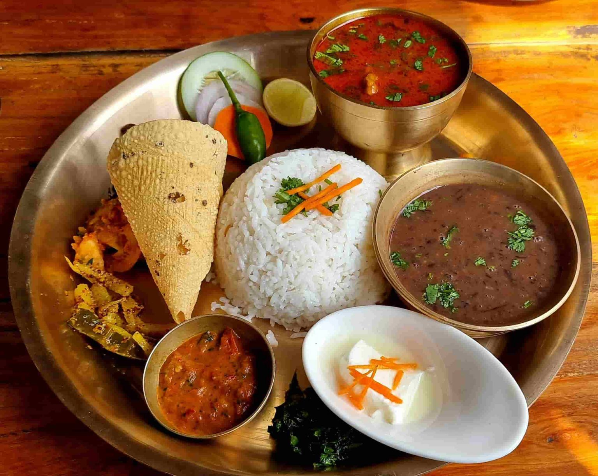
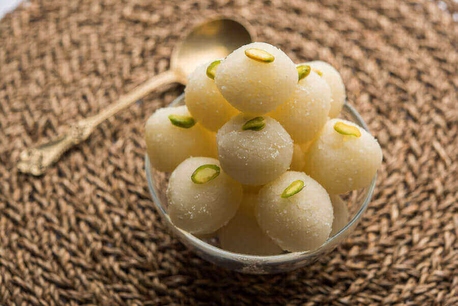
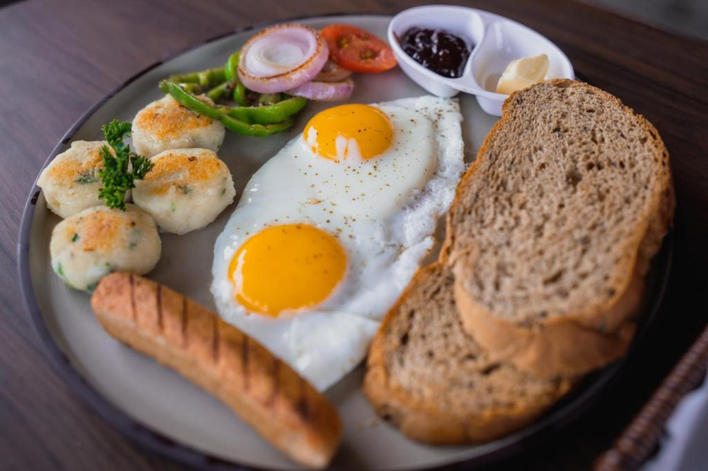
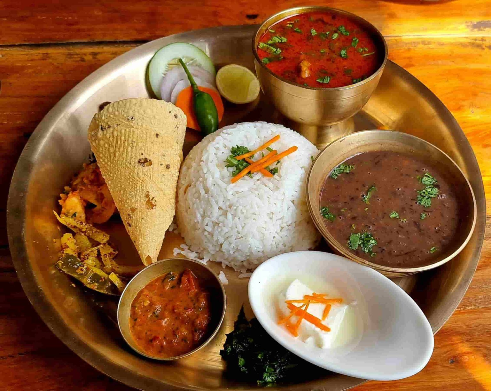
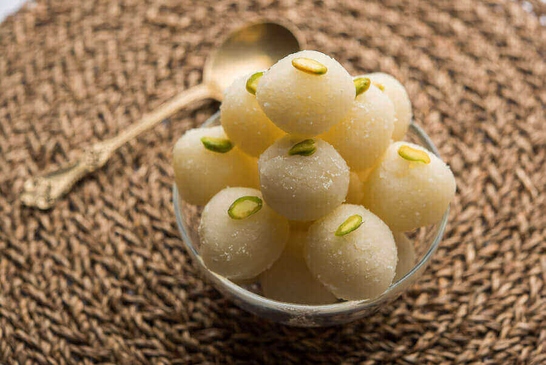
Nepali Thakali Food Nepali Breakfast Nepali Lunch Nepali Dessert
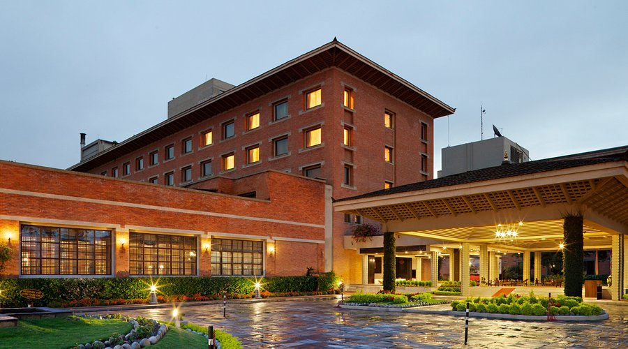 Hotels here offer a blend of comfort, natural beauty, and cultural immersion. Many accommodations in the area focus on providing a peaceful retreat, surrounded by lush greenery and scenic landscapes. The quality of hotels here is often defined by their serene atmosphere, traditional architecture, and warm hospitality. The hotel from outside look more attractive. It looks like a eligant palace from outside and also form inside. There are swimming pools and many other activities we can do in this hotel. Many tourist are attracted toward this hotel.
Hotel
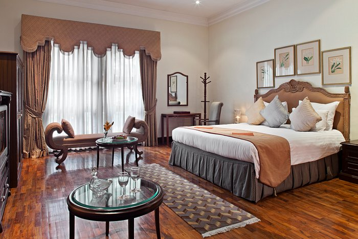Rooms are typically well-furnished, featuring cozy interiors that reflect local craftsmanship. Many hotels prioritize eco-friendly practices, incorporating organic farming and sustainable tourism into their services.A comfortable bed with every facility in th room is provided. A cool furnished bed and lighiting of the room make it more attractive and beautiful. The lighting and decor created a warm and relaxing ambiance, while the amenities, such as the Wi-Fi and air conditioning, made my stay even more convenient.The room was very eligeant and very atractive with good lightining and decorations.
Bedroom
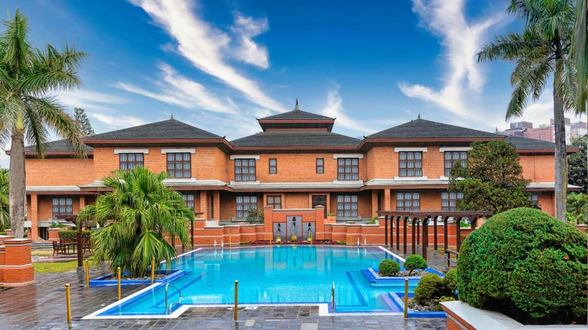The swimming pool was another highlight of my stay. It was beautifully maintained, with crystal-clear water and a serene atmosphere. I loved how the seating area around the pool allowed me to relax and soak in the surroundings. Whether I wanted a leisurely swim or just to unwind by the water, the facility provided the perfect escape. The hotel staff ensured the pool remained clean and inviting, making it a great spot to unwind and enjoy the stay.The ambiance around the pool plays a crucial role in creating a tranquil atmosphere.They also gave us many facilities in the swimming pool .
Swimming pool
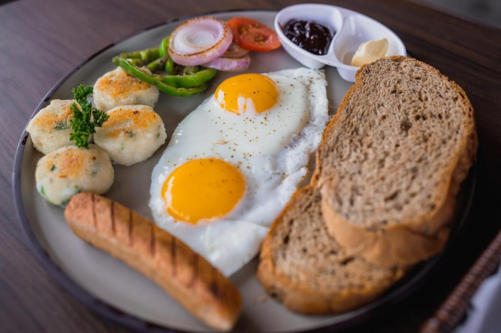
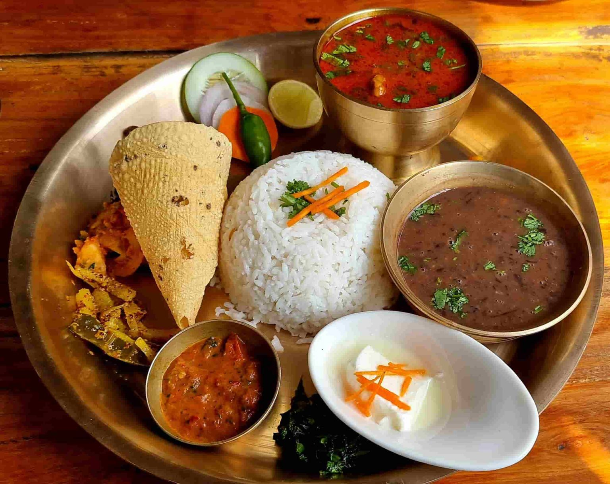
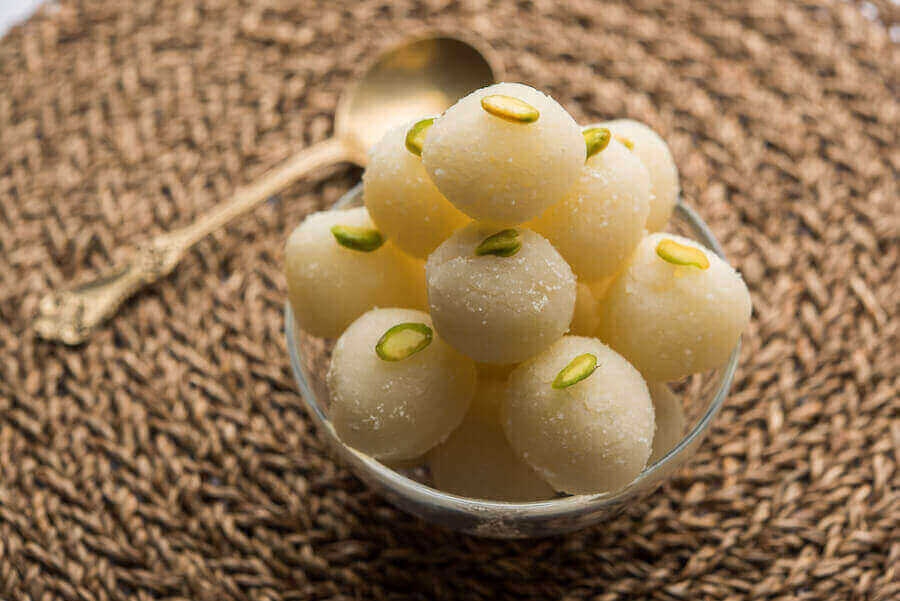
Nepali Thakali Food Nepali Breakfast Nepali Lunch Nepali Dessert